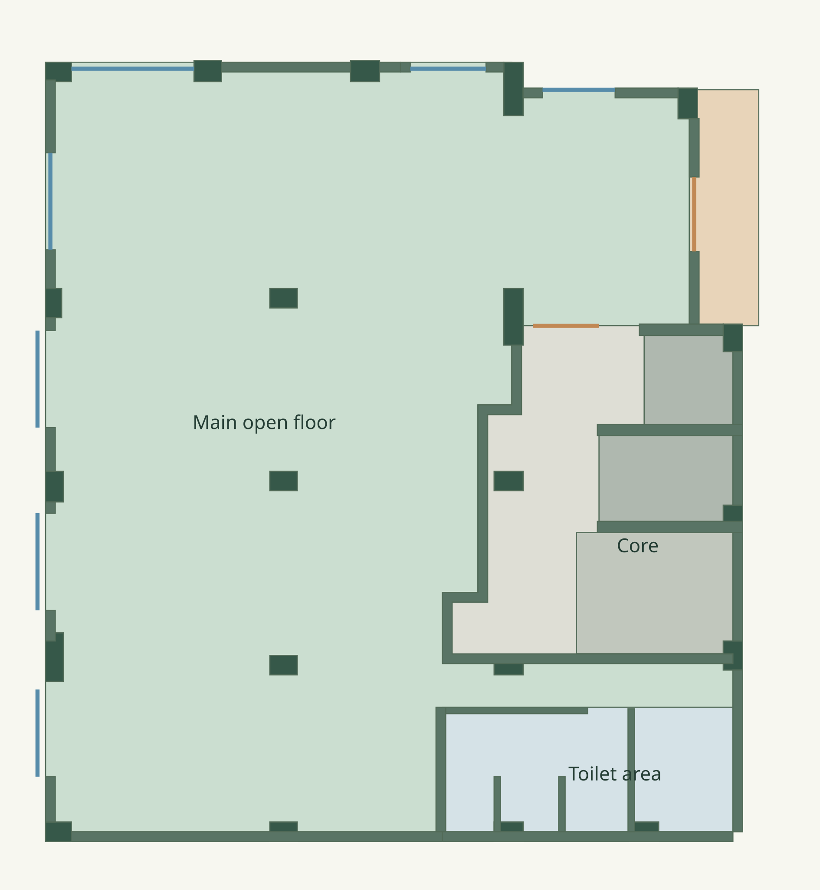

Paila Pilates · Third floor
Studio Layout & Digital Twin
Review the third-floor layout in 2D and 3D. The plan is a dimension-calibrated interpretation of the architectural source, with traced positions awaiting confirmation.

Loading interactive plan…
Drag to pan · pinch or scroll to zoom · tap a zone to explore.
View options
Coordinate grid and location
Origin: lower left source reference. +X right, +Y up. 1 mm coordinate storage; traced accuracy is much lower. North is unresolved.
Drawing scope and dimensions
This is a source-derived review preview, not an as-built survey or construction drawing. The 15,655 mm overall horizontal label sets the trace scale. Vertical overall labels and reference datums need reconciliation; the model uses the same scale on both axes.
Wall faces, columns, openings and core boundaries are traced from a small raster image. Exact thicknesses, opening heights, stair levels, toilet allocation and True North remain unconfirmed. The 3D view uses adjustable illustrative height, with stair and lift footprints shown flat.
| Source area label | sq ft |
|---|---|
| Rental | 2,334.27 |
| Carpet | 1,966.10 |
| Balcony | 109.25 |
| Toilet | 258.81 |
Labels are transcribed from the source, not calculated from the preview. The parts total 2,334.16 sq ft, 0.11 sq ft below the rental label.
Lift labels: 1810 × 1950 mm and 2680 × 1950 mm. Traced shapes are retained independently; these nominal labels do not certify shaft or door clearances.